中国原子能科学研究院教育培训中心
职工培训管理实习
参与职工培训管理，负责院培训大纲编写和内部培训讲师管理，并参与研究生制度、培训制度及博士后制度的编修工作。
培训大纲讲师管理制度编修
实践图片后续可添加培训活动或工作照片
相关文档后续可添加成果或证明材料
03 / EXPERIENCE
在培训管理、学术交流、会议组织与检测实习中积累真实场景下的执行与协作经验。
参与职工培训管理，负责院培训大纲编写和内部培训讲师管理，并参与研究生制度、培训制度及博士后制度的编修工作。
参与完整办会周期，负责会议通知起草、主要参会人员联络、筹备会议纪要、“青年科学家委员会”成立方案及报告人简介制作，并承担大会现场工作。获得感谢信及工作证明。
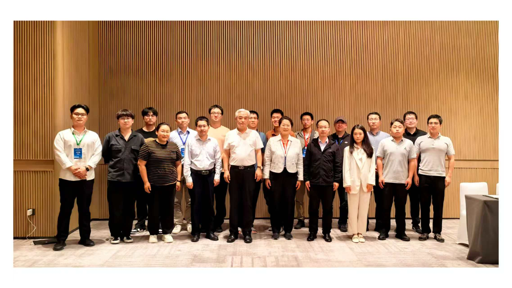
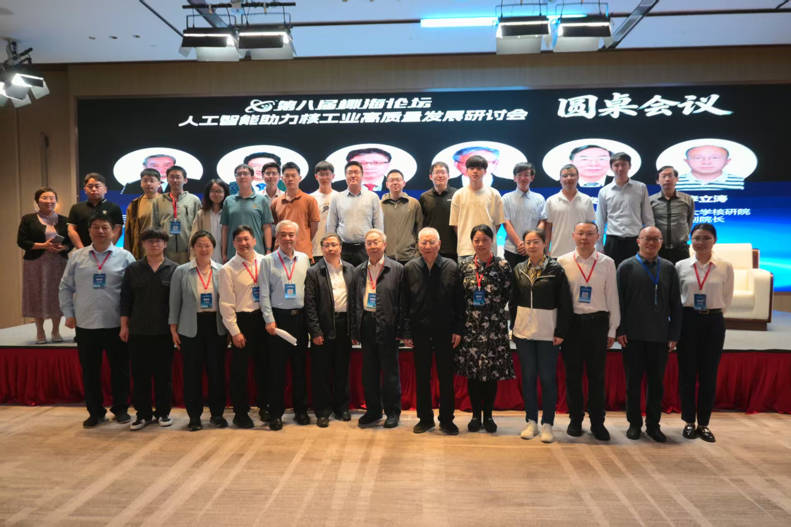
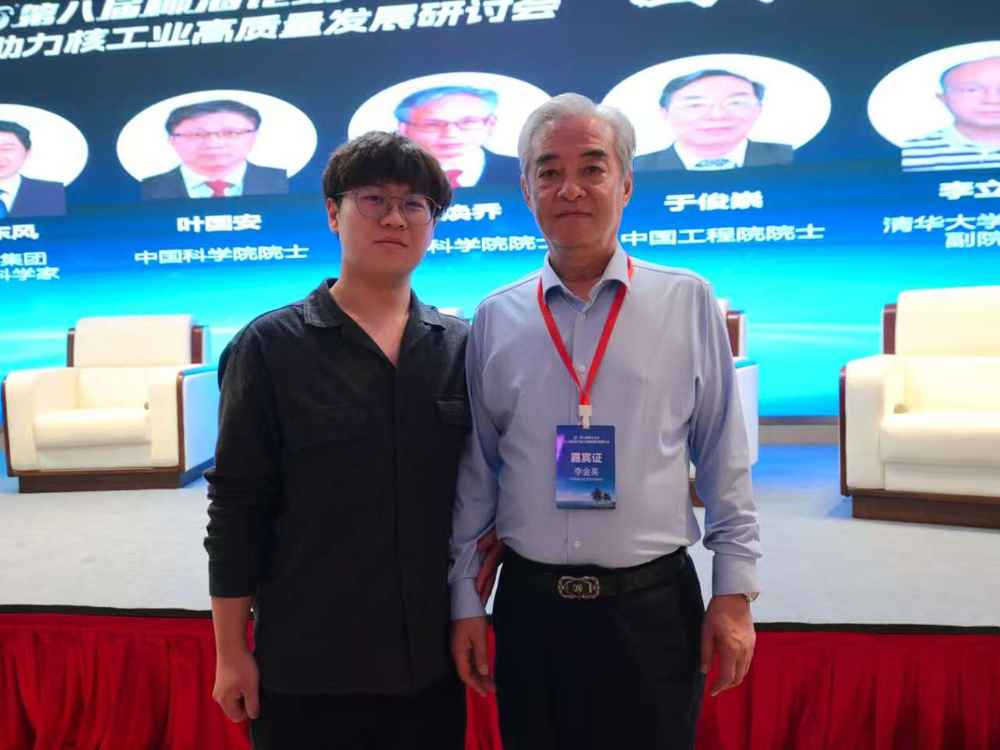
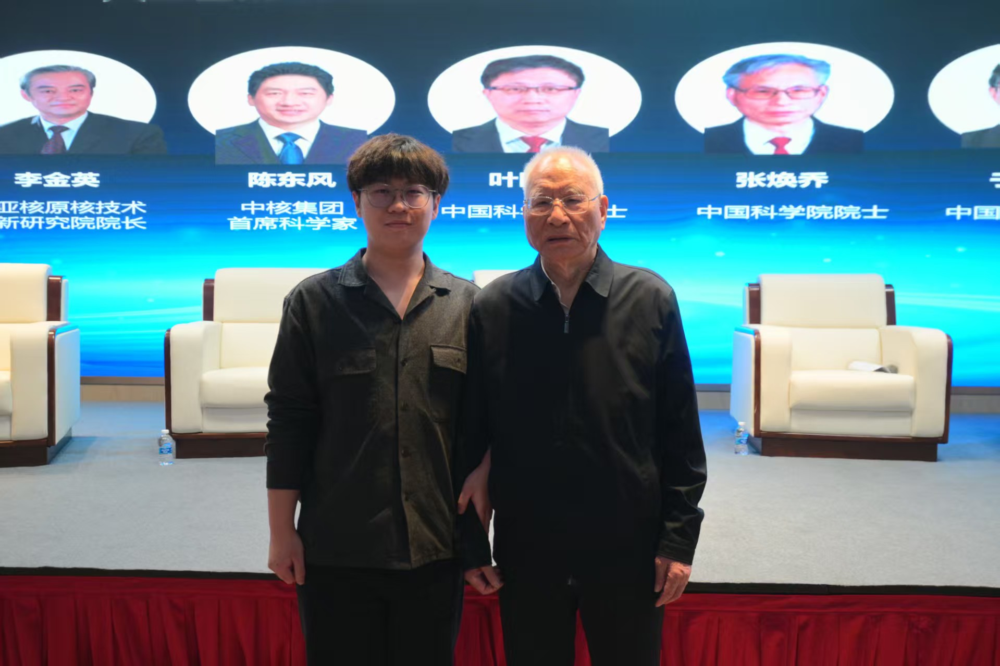
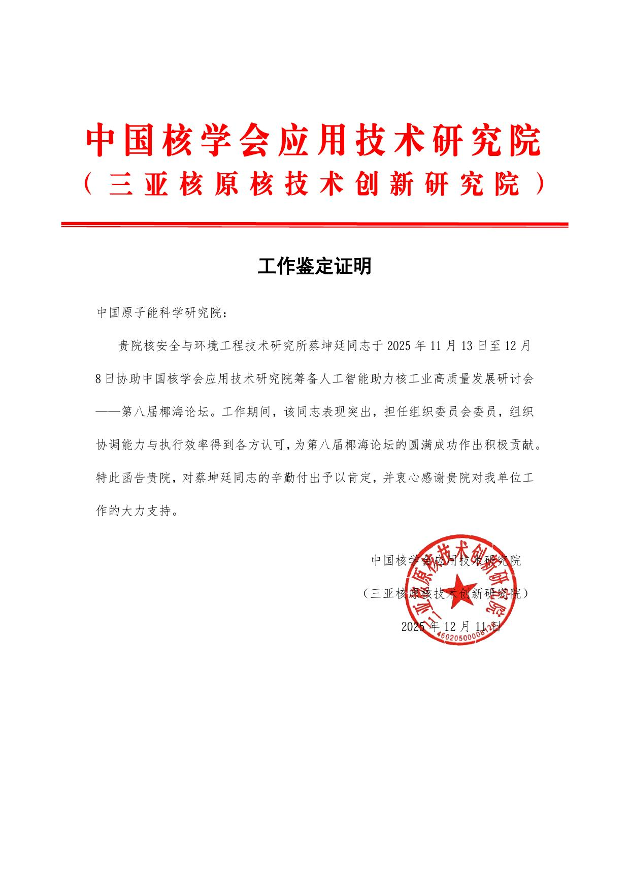
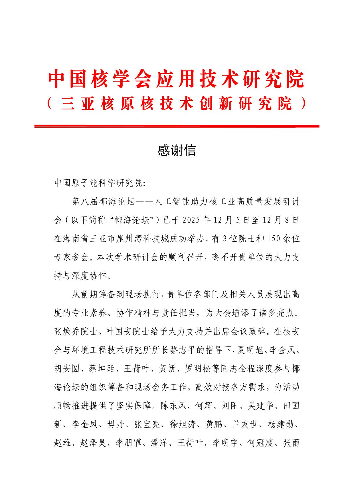
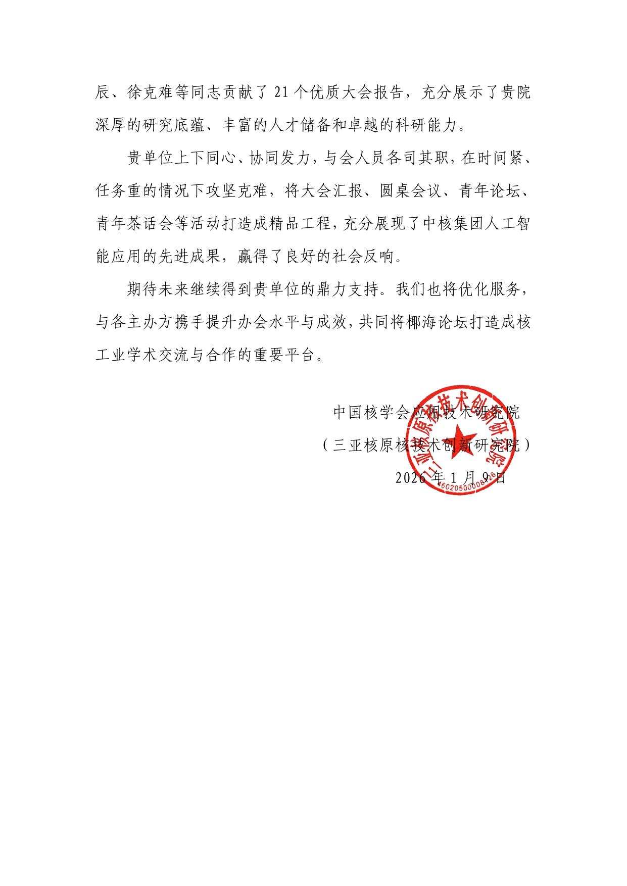
总结研究生期间对不同切割方式产生气溶胶特征的调研结果，制作并投递《核设施退役中不同切割方式放射性气溶胶释放特性研究进展》学术海报，在大会期间展出。
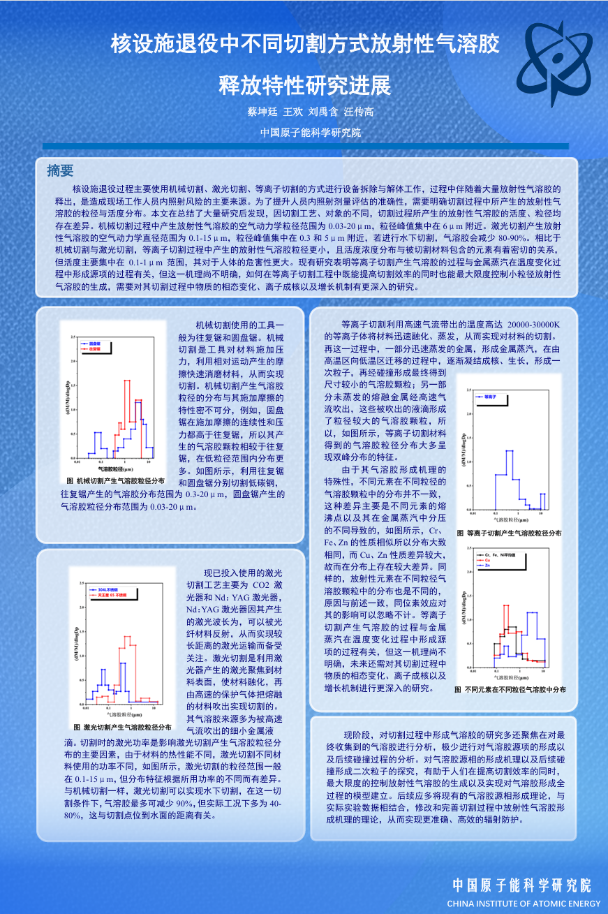
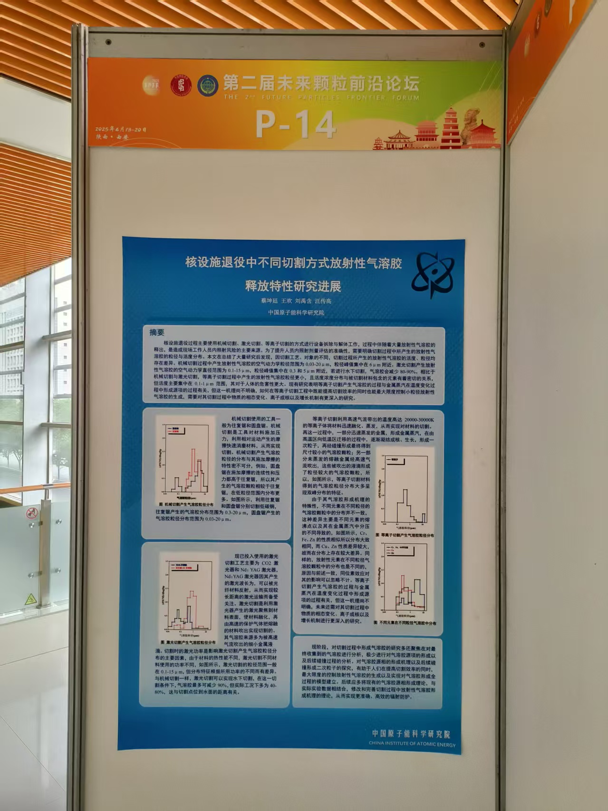
学习检验机构工作规程、检验标准以及高效液相色谱仪、气相色谱仪等常规仪器的检测原理和使用方法，具备独立开展分析实验与承担日常检测工作的基础能力。
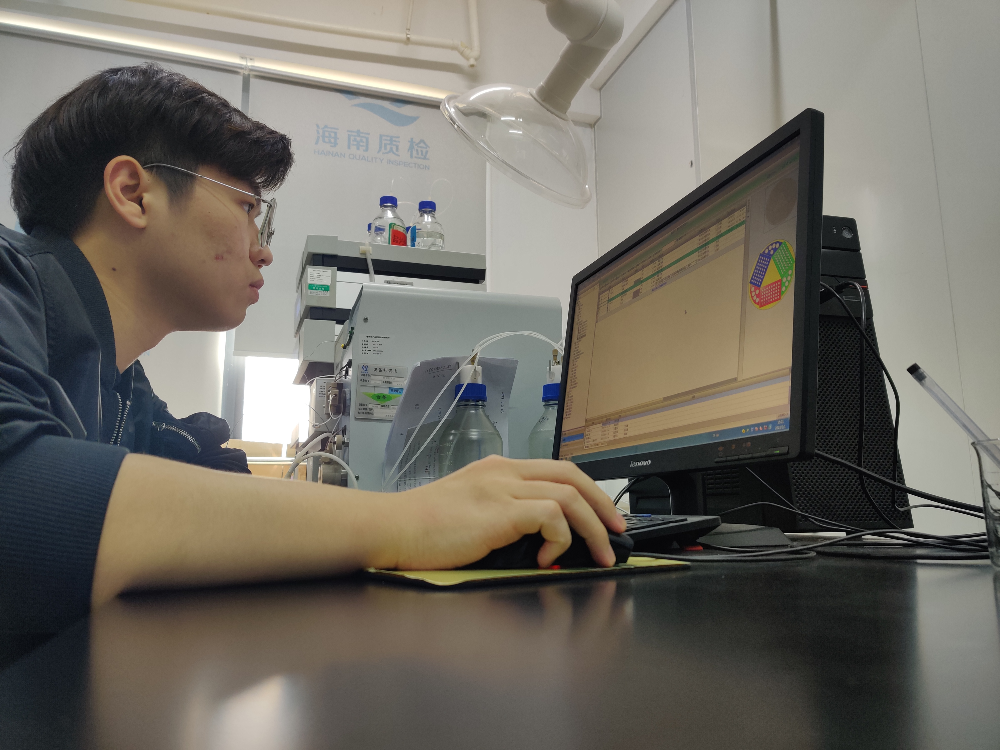
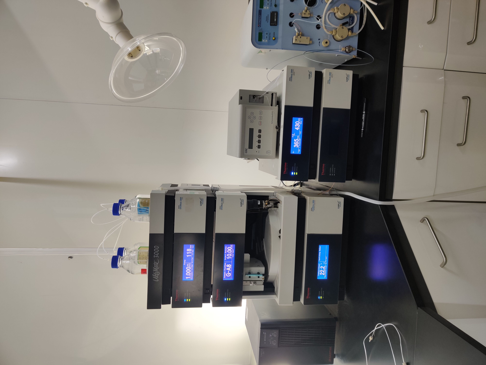
NEXT CHAPTER